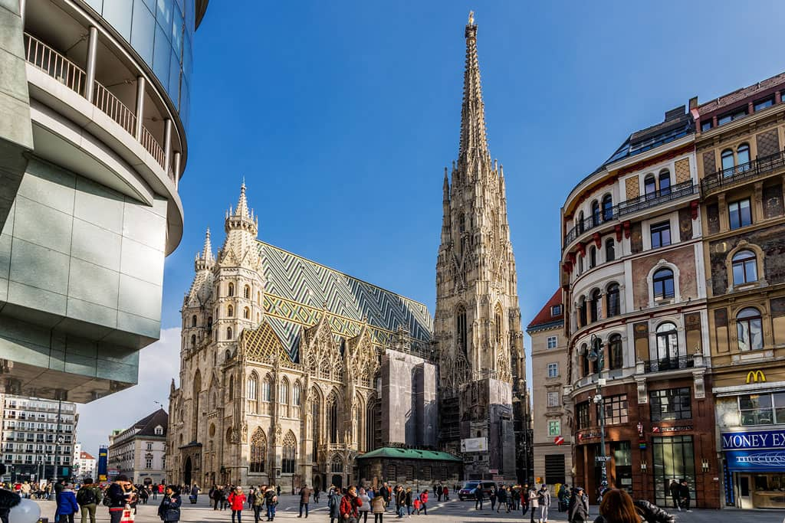

1. Барселона (Іспанія)

Сонячне місто на березі моря, відоме химерною архітектурою Гауді та пляжною атмосферою.
Сонячне місто на березі моря, відоме химерною архітектурою Гауді та пляжною атмосферою.

Культурна столиця Європи з розкішною архітектурою, затишними кав'ярнями та альпійською водою.
Японський мегаполіс, який вважається головною столицею вуличної їжі та неонових вивісок.